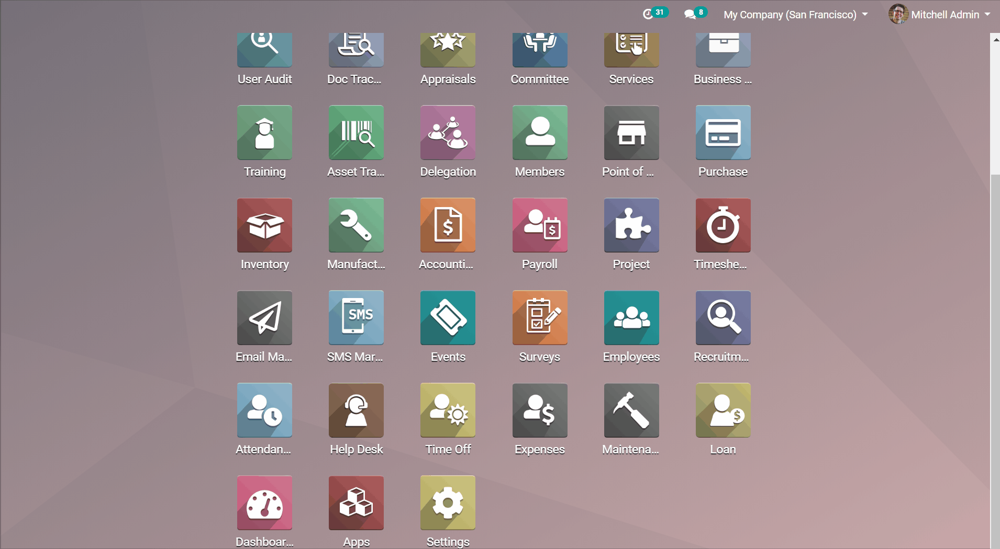

Overview

An illustration of its function and integration

Wide range of attribute configuration

Deferred expenses and prepayments (also known as prepaid expense), are both costs that have already occurred for unconsumed products or services yet to receive.
Such costs are assets for the company that pays them since it already paid for products and services still to receive or that are yet to be used. The company cannot report them on the current Profit and Loss statement, or Income Statement since the payments will be effectively expensed in the future. These future expenses must be deferred on the company’s balance sheet until the moment in time they can be recognized, at once or over a defined period, on the Profit and Loss statement.
“Deferred Expense” module extends the functionality of the Odoo Accounting module. It allows you to handle deferred expenses and prepayments by spreading them in multiple entries that are automatically created in draft mode and then posted periodically. The “Deferred Expense” module is a great tool that allows users to simplify distributing expenses by enabling them to make entries with future periods.
Accounting
Accounting
⁕ Generate Deferred Expense Entries
Accounting
⁕ Deferred Expense
Configuration
⁕ Deferred Expense Types
Odoo standard module report.
Highly customizable deferral schedules.
Supporting multiple recognition methods.
Fully integrated with other Odoo applications.
High flexibility to define different expense records.
Great configuration feature to define deferred expense types.
High flexibility to establish schedules for automatic calculations based on prepayment accounts.
Ability to search deferred expense records with different dimensions, for example, Category, Vendor, Date, Status etc.